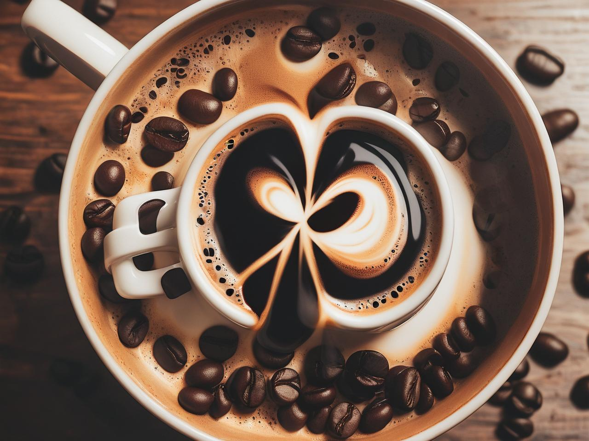

Recharge and Reset
|

Recharge and Reset
We’re witnessing a moment in history, where people are coming together to collectively dismantle systemic injustices that have existed for far too long. Locally, we’re finding ways to translate these global learnings and apply them to issues that exist on home turf. At this juncture, our voices matter in helping create the world we want to live in.
With so much work to be done, and it’s more important than ever that we take our self-care seriously. It goes without saying that exhaustion and burnout don’t allow us to engage meaningfully in the critical conversations that are unfolding – locally and worldwide. To hold space for others, to learn, to listen, and to take action, rest is key. Periodically and intentionally, take space to disconnect and recharge yourself. Here are some ways to do so:
Use Your Senses to Guide You
Put your devices away. Take some time, and if possible, take physical space to be by yourself. Fill this space with an activity that invokes your senses, and in doing so, will ground you to the present moment. When you reconnect with your senses, you are encouraging your mind to slow down and connect with your body. Especially in times when you’re feeling overwhelmed, irritable, or agitated (as we often are, given the realities of today), it’s important to downregulate your nervous system. Focusing on your senses is one way to do so. Take time to slow down, breathe, and allow your senses to be the conduit through which you reconnect with the moment.
Try This:
Sit in a sunlit corner of your house, play some relaxing music, close your eyes. Take in the sensation of the sun on your skin. Observe your thoughts as they come and go. Take three seconds to breathe in, hold your breath for three seconds, and slowly breathe out through pursed lips for three seconds. Repeat this as many times as you’d like.
Take a walk in the park by yourself. What do you smell? What are some sounds that stand out to you? What are some sights that catch your eye? How does the air feel against your skin? What thoughts and memories come up as you pay attention to your senses? You could even take a few minutes to write down some of these sensory memories when you are back at home, and use them to reflect on your inner world.
Brew a cup of coffee mindfully and slowly, paying attention to the sensory experience of each step involved. Keep all your senses open, and soak in all the sights, sounds, tastes, smells, and textures. You’ll likely find yourself experiencing wonder and joy as you immerse yourself in this moment.
Embrace Movement
In keeping with the notion of mind-body connection, movement is a key way in which you can give your brain the support and care it needs. When you exercise, the benefits to your mental wellbeing are exponential. With exercise, your brain’s cognitive functioning improves, and you’re able to think faster and more creatively. As a result, you have a heightened sense of confidence and self-esteem. In addition, exercise helps stabilise your mood, allows you to sleep better, and combats anxiety. Overall, exercise allows you to play an active role in your own mental wellbeing.
Try This:
Give yourself 15-20 minutes to exercise, at least thrice a week. Show up for yourself. Instead of viewing movement as a bothersome task to “endure” and suffer through, view it as a gift you’re giving yourself. Thank your body for its ability to move and keep you safe in this world. If vigorous activity isn’t for you, try deep stretching, a brisk walk, or even a fun dance around the room to your favourite music. Anything that will keep your heart rate slightly elevated for 15-20 minutes will allow you to tap into the mental health benefits that exercise offers.
Routines
Uncertainty is one of the biggest sources of distress for human beings. Numerous research studies have shown that we prefer certainty to uncertainty, and even experience heightened nervous system activation during periods of uncertainty. A nervous system that’s constantly in fight or flight mode will chip away at your health in the long term, too. So how can we create islands of security in these oceans of uncertainty?
Routines are one way to establish predictability into your life, which will help give you a sense of control. Think of a routine as an anchor. The simple act of making a plan or setting a schedule will help you approach the situation from a place of self-agency. A routine can provide the much-needed sense of structure during times when everything else feels chaotic and unpredictable.
Try this:
Make self-care a part of your daily routine. If it helps you, write down a plan, including 5 tasks you want to achieve through the day. Make one of these tasks a self-care oriented task. Mix this up. One day, this could be taking a nice walk in nature, but on another day, you could schedule time to journal or even take a nap. Over time, you’ll build a habit of intentionally giving yourself time to recharge every single day.
The ideas outlined here are just suggestions, starting points from which you can build self-care practices that suit your unique preferences and circumstances. What is key, though, is to be intentional about caring for yourself. Remember, self-care isn't an act of selfishness but a commitment to the collective – to show up for the daily work ahead of us energised and raring to go.